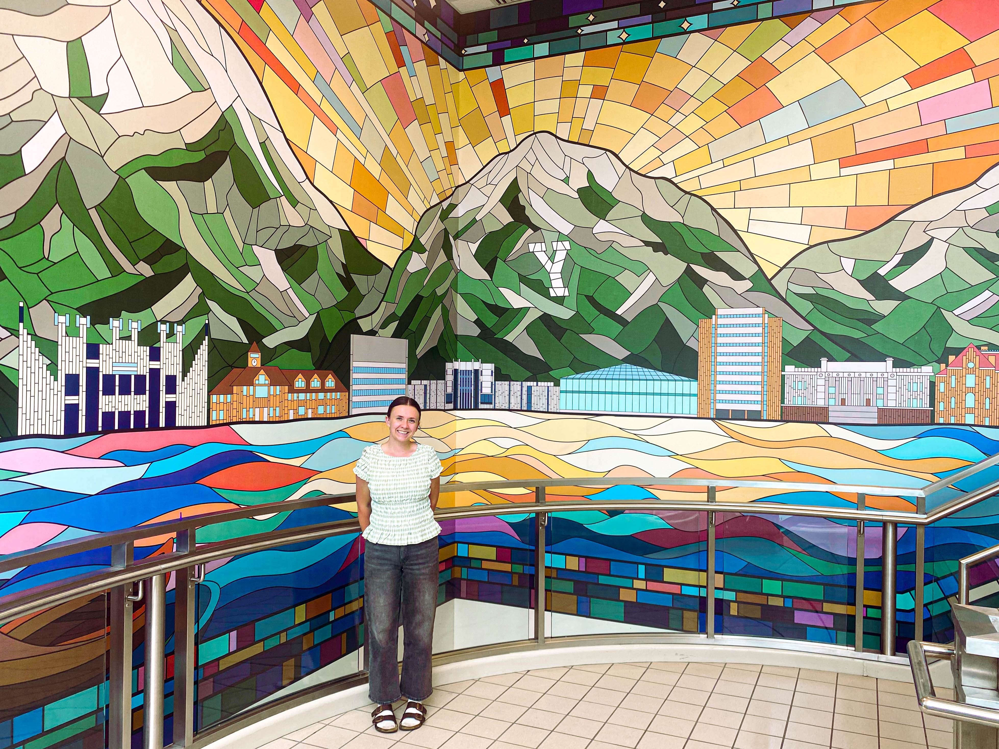
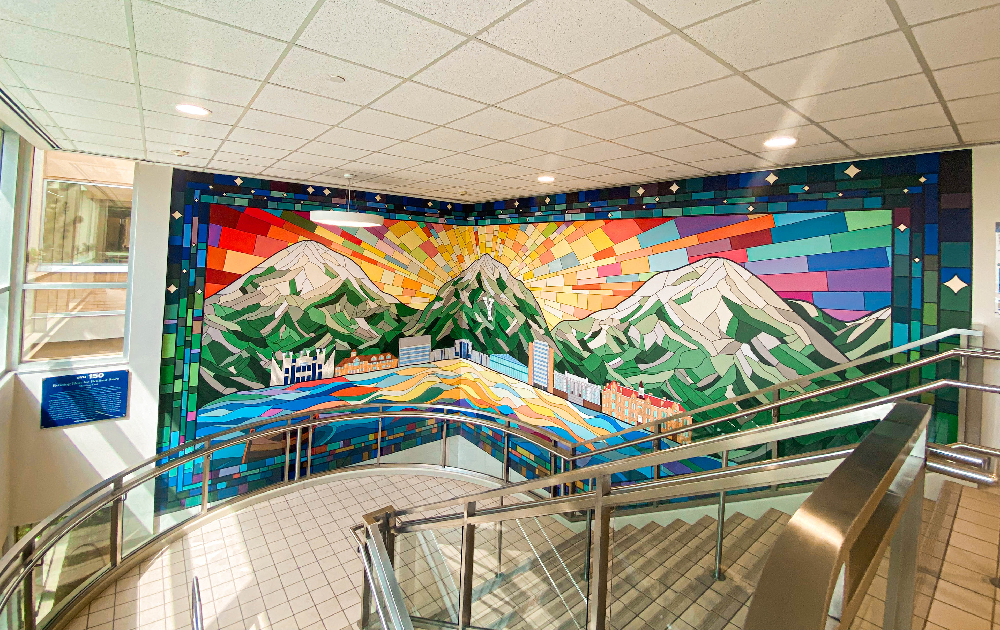
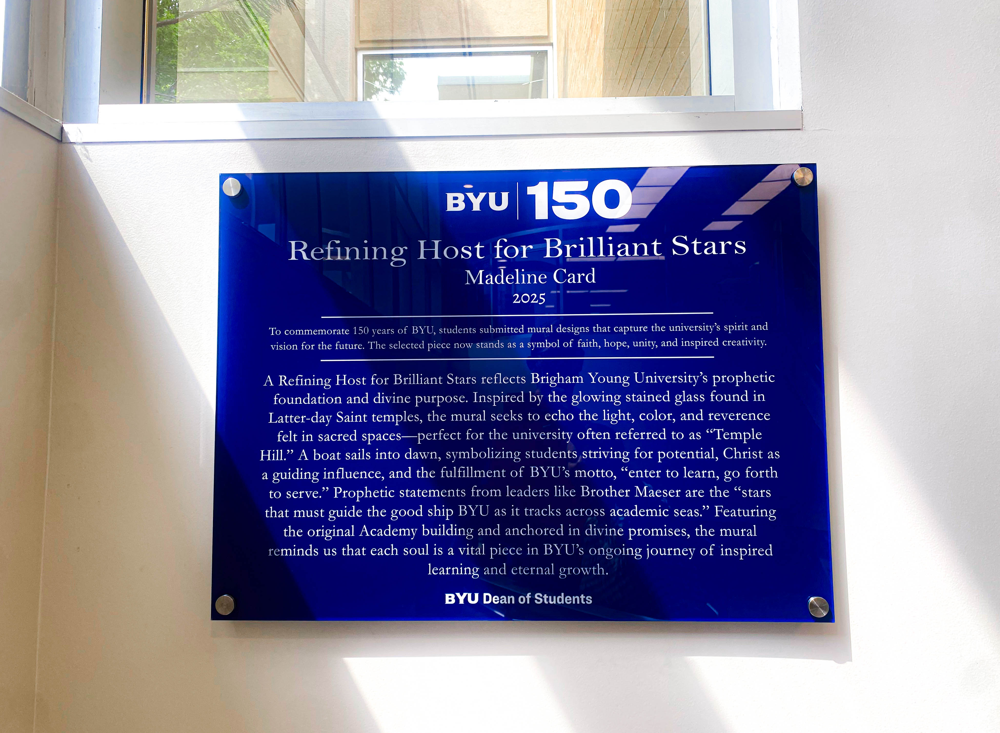
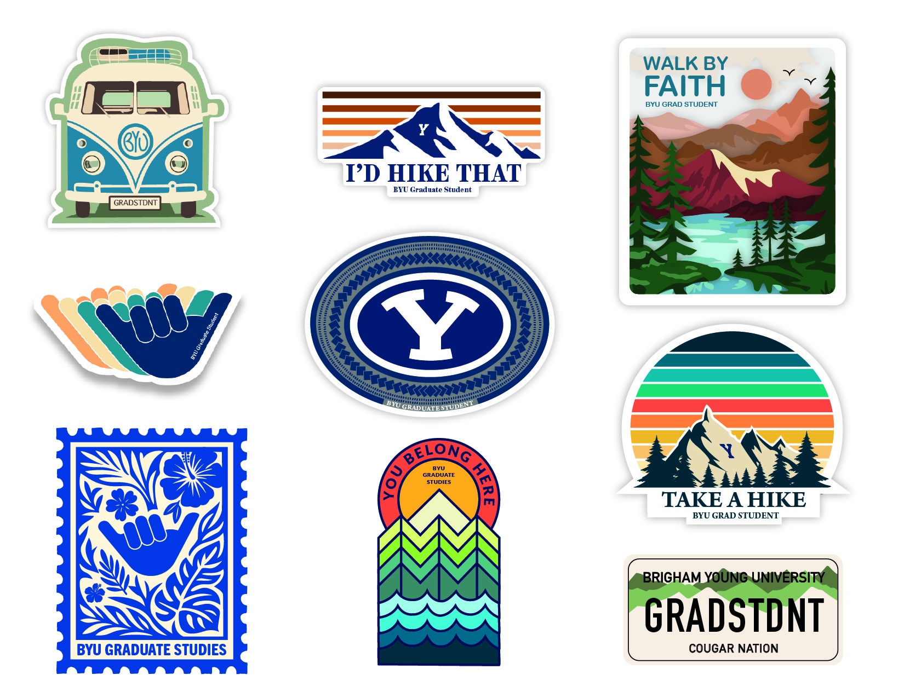
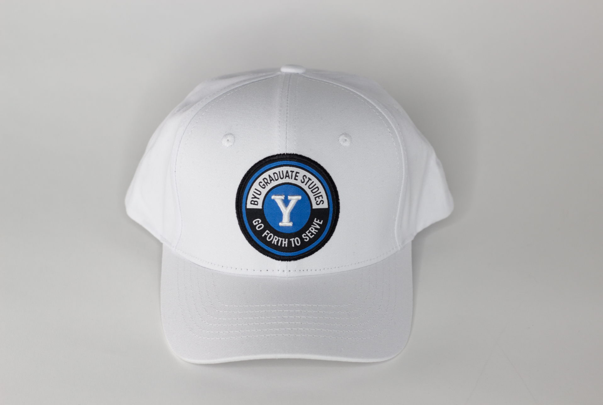
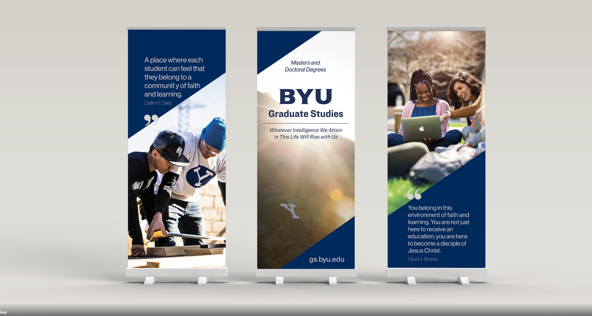
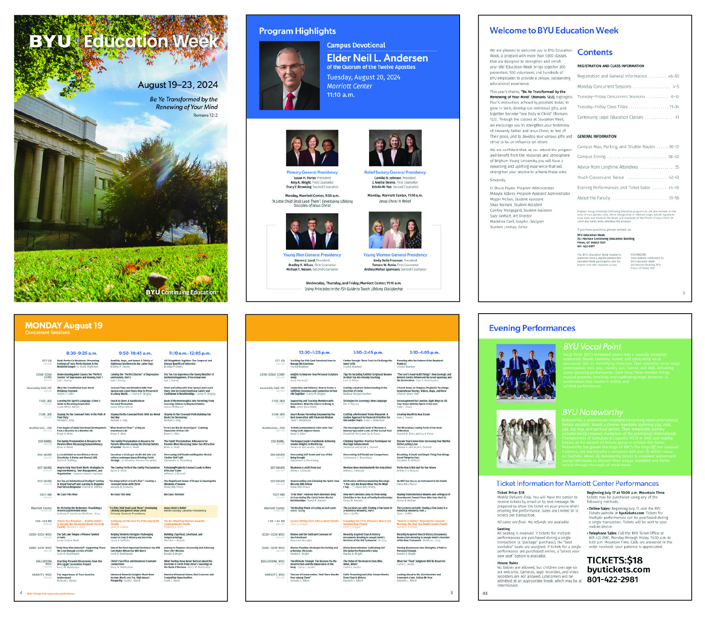
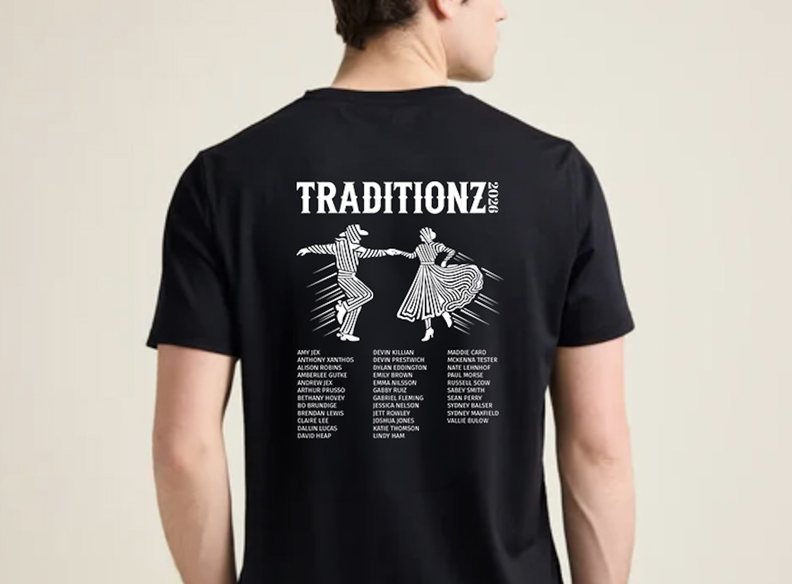
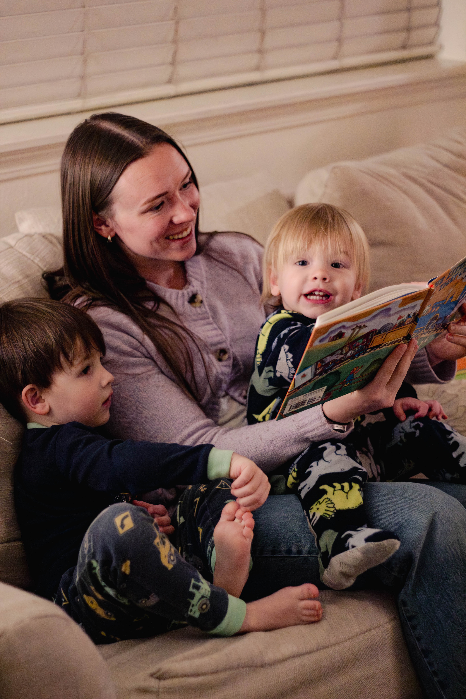
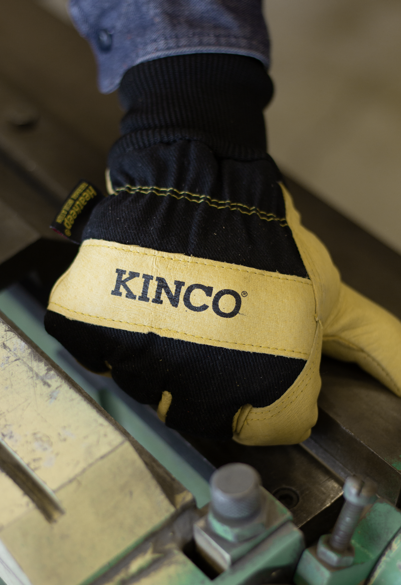

Madeline Card
Designer
About
Hi!! Welcome to my portfolio!! I am so so glad that you're here!
My name is Madeline Card and I am a Technology & Engineering student at Brigham Young University.
I personally believe that the best way to get to know someone quick is to know the random facts about them... so here are some of mine:
- I've broken more bones than I can count... just kidding I can count to 11 :))
- I hate getting my feet wet, but I also hate wearing sandals without socks, unfortunately that causes quite the dilemma when I get out of the swimming pool and have to thoroughly dry my feet before putting on shoes and walking.
- I am a member of BYU's Folk Dance Ensemble. I LOVE being able to learn dances from cultures around the globe and performing them. It helps me feel connected to other people and their traditions.
- I served a mission for my church in Ecuador and miss the country so much!
- My husband is 13 inches taller than me... don't ask me how that works but it does (thank heavens)

Graphic Designer & Videographer
Below are listed some details about me.
- City: Provo, Utah, USA
- Email: madelineb7192@gmail.com
- Freelance: Contact for details
If you want to get in touch, feel free to send me an email—I’m always happy to chat. I’m currently open to freelance work and love taking on new projects that are creative and interesting. I work with people from all over, so don’t hesitate to reach out no matter where you’re located.
Skills
Here are some core skills that I use to build, create, and solve problems for clients.
Resume
I am an aspiring entrepreneur and experienced graphic designer with a strong foundation in creative problem-solving and leadership. I recently discovered a passion for entrepreneurship through introductory classes that were required for my minor. I completed an LDS mission in Ecuador, gaining valuable interpersonal and cultural skills. I am committed to continuous learning and building impactful ventures
Education
Bachelors in Technology Engineering Studies
2020 - 2026
Brigham Young University Provo
Bachelor’s degree in Technology and Engineering Studies from Brigham Young University, with an emphasis on creative and digital media applications. My studies and projects focused on photography, videography, UX/UI design, and graphic design, blending technical problem-solving with visual storytelling and user-centered design. I gained hands-on experience working with both creative and technical tools to produce engaging visuals and intuitive digital experiences.
Minor in Business
2023-2026
Brigham Young University Provo
Minor in Business from Brigham Young University, focused on marketing and entrepreneurship. I’m interested in how brands grow and how creative ideas become real products and campaigns, and I’ve explored these areas through coursework and projects in branding, consumer behavior, and business strategy.
Professional Experience
Creative Lead
August 2024 - Present
BYU Graduate Studies
- Digital design: flyers, posters, social media graphics, and event promotions
- Merchandise design: stickers, t‑shirts, hats, jackets, and other branded items
- Print design: retractable banners, photo booth backdrops, brochures, and large‑format displays
- Brand consistency: ensuring all creative assets align with BYU Graduate Studies’ identity and messaging
Project Manager
August 2025 - December 2025
Sumsion Business Law, Internship
- Social Media Marketing: built the firm’s online presence from nothing through strategic content creation and audience engagement, including through posts, highlight stories, and reels.
- Customer Growth: developed campaigns to expand the client base and strengthen brand awareness, including the promotion of the Live Like Alex Scholarship and the Paralegal Internship Applications
- Website Design: creating a competitive analysis of things the website could improve
- Creative Strategy: aligning visuals and messaging with the firm’s professional identity to ensure consistency across platforms
Graphic Designer
November 2023 - September 2024
BYU Continuing Education
- Cross‑department collaboration: designed for a wide range of clients including Women’s Conference, Education Week, Independent Study, EFY, and Dance Camps
- Digital design: flyers, posters, social media graphics, and promotional materials for diverse programs
- Merchandise design: stickers, t‑shirts, hats, jackets, and other branded items
- Print design: retractable banners, photobooth backdrops, brochures, and large‑format displays
- Branding: developed and maintained style guides to ensure consistency across departments and events, including typography rules
Portfolio
A collection of my work in photography, videography, UX/UI, and graphic design—focused on visual storytelling, thoughtful design, and creating meaningful user experiences.
- Awards
- Graphic Design
- Videography
- Photography

A Refining Host for Brilliant Stars
BYU Dean of Students Digital Mural Competition

A Refining Host for Brilliant Stars
BYU Dean of Students Digital Mural Competition

A Refining Host for Brilliant Stars
BYU Dean of Students Digital Mural Competition

Stickers
Stickers were an item of merch that I made annually for BYU Graduate Studies

BYU 150 Hat
To celebrate 150 years of BYU being a University, I designed and printed hats to gift to the students.
BYU 150 Pin
To Celebrate BYU's 150 years of being a University, Graduate Studies had me make a metal pin to gift to students

Retractable Banners
To better help Graduate Studies at fairs and recruiting events, I made several retractable banners for display.

Education Week Magazine
When I worked for BYU Continuing Education, I had the opportunity to design and print the 2024 Education Week Magazine.

BYU Folk Dance Ensemble Tshirt
I am a member of the BYU Folk Dance Ensemble, and had the opportunity to design and make our team tshirts in both 2025 and 2026.
Short Film
In a class I took at BYU, one of our projects was to film a short film/mini documentary. My team and I chose to focus on the moral overcoming discouragement.
Childhood Memory
In a class I took at BYU, one of our projects was to capture a childhood memory. My childhood memory was reading books with my mom.

Childhood Memory
In a class I took at BYU, one of our projects was to capture a childhood memory. My childhood memory was reading books with my mom.

Headshots
In a class I took at BYU, one of our projects was to get headshots of our classmates. This is a picture I took from that project.

Headphones
In a class I took at BYU, one of our projects was to take random items and photograph them. This is an image I took of headphones on a dark background.

Camera
In a class I took at BYU, one of our projects was to take random items and photograph them. This is an image I took of an old camera on a grey background.

Kinco
In a class I took at BYU, one of our projects was to take photos of products for various brands. This is an image of Kinco gloves I took.
Availability
Below you will find details as to what I do and what I am available to do.
Freelance
I love to do freelance work, and if that is something you are looking for, contact me for more information such as rates, availability, and timeline.
Digital Design
I love to design, and if you are looking to hire a Graphic or UX/UI Designer and are interested in my services, contact me below for availability!
Marketing
I love to build social media platforms through photography and videography. If you are looking to hire someone in this field contact me for more personal and specific information!